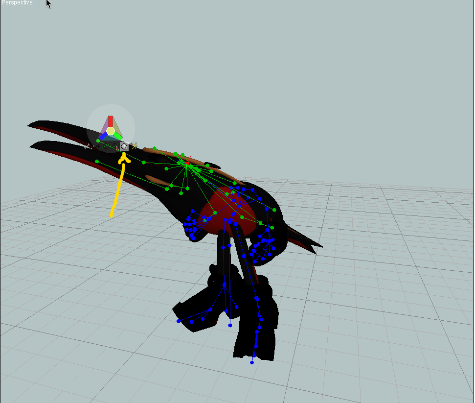
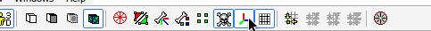
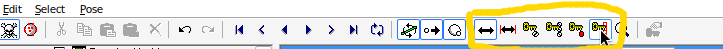

Animating in FragMOTION
0: Intro
With a little bit of reading, you can start animating in 20 minutes, or less! Let's begin by opening FragMOTION!
- Depending on your screen size, and customizations some interface options may look different.
- Icons used in this tutorial reflect icons on the program. They can be hovered over to see their names.
NOTE: This guide uses game files to teach the sheer basics of animation in FragMOTION, be sure to make a backup of any file you modify, or you will need to redownload the game. This process can then be used to make actual mods.
- To backup a character please right-click the file you will be modifying, and make a copy. You will right click a blank area within your folder to paste, when asked whether to overwrite, or rename the file select
Rename. You now have a backup of the file we will be modifying.
0.1: Software Required
- FragMOTION is known as "nagware", where when used freely, it will have an obnoxious popup unless you type a prayer into your textbox.
-
The purchasing page no longer works for FragMOTION, meaning you cannot get rid of this nag without an existing key. Go into the program for the first time, navigate to
Help/Register FragMOTIONon the toolbar on the top of the winder and insert these: -
Product Code:
9B0BC130010E4C00CE0088CA0C4C14AB - Registration Code:
A6F82D4423AF34AC59FA5D6291F4BE7A
0.2: Optional Software
Blender FBX Converter - Free Better FBX Importer & Exporter (Paid Addon) Positioning Assistance Tool Height Chart
For the purposes of this tutorial we will be Animating in Fragmotion, so none of this is needed unless you plan on using your own models.
1: Camera, Common Interface Options
In the middle of the screen you will see a Grid, let's call this a "Field". It's where we will see your character on screen! Pressing right click allows you to rotate the camera, if you right click in middle it'll rotate kind of how you expect it to.
If you right click the outside however it will rotate in a different way, kind of like a plane rotates. If you middle click the screen you are able to move around when dragging your mouse.
- Right click to Rotate
- Middle Click to Move
- You can mouse over any selectable object within fragmotion, and a popup will appear that shows you the name of an interface option
1.1: Camera Angles

The following buttons control Camera Angles.
is similar to the in-game Camera
,
,
,
,
, and
are for Bio, and Victory Animations
In-game animations will always be viewed like the , with Bios using
.
- The yellow dots on a model are Vertices
- Vertices represent the individual points that make up your model
- You can turn them off with the
- Blue dots with lines are bones.
- you can disable them via the
next to the
. These are your characters "Skeleton".
Now that you know these common buttons, let's open a character!
2: Setting up a Character Model
If you want to edit a character, File > Open > Sonic World DX > Data > Characters > 3 letter name > Model > model.b3d.


So here we've opened Shadow the Hedgehog. The character will be blacked out if using a model from SWDX.

- B3D Files are a "lossy" format used by Blitz3D, i.e SWDX.
- You can also open FBX 2009, OBJ, DAE, and UGH files among many others
- When modifying your character alway save as .UGH, save as .B3D when you're done
- All characters are blacked out because of "RefMaps" which create layers on a character that show up Black in fragmotion
- MODEL.b3d = In-game Model
- BIO.b3d = Character Select Model
2.1: Let there be color
On the right, there's a section called "Model". Click on that.
You'll see the
Mesh,
Smoothing Groups,
Textures, and
Materials menu.

You can expand Materials with the little plus button to the left, and a material object the same way. Click on a grey box.


Example of Materials

Under properties you will see Texture Layer and Type. Select Bump-map under the type. Your material will change from a to a
. You should see some color on the model now!


- Bump Maps are not supported in Blitz3D. This will just let you see the model without the RefMaps. They will automatically be converted back into alpha maps on export, which is intended.
Now that we can see our character, let's set up our Interface, and Tools!
3: Interface
Let's go to the "Tools" menu, and select

For now you can select "Hide" since we aren't using the Tools
While were here you can grab the "PADDED" bar that's grey, and drag the tool menu to the far left of your screen to expand your view of it, and make the workspace easier to use. You are able to drag any workspace to any location on your screen, but for the purposes of this tutorial I use the left side for "TOOLS"
Feel free to customize it to your liking.


- We setup our Tool Tree
- Selected Hide so we don't activate anything
- Changed our UI to better fit our needs
3.1: Basic Animating interface
Let's move on to something, more interesting. You can click on the Animations tab to view animations.

There is an animation player on the bottom of the screen. It will play the animation forward, backward, or frame-by-frame, a frame being a single image.
Example here, of Frame 8 of Shadow walking.

- The GREEN box is the frame where where the animation playback starts
- WHITE is your current frame
- The RED box is where the looping of the animation ends. Let's look at the blue lines again, it might hurt your eyes, or look hideous, but they are important to the way Animating works within SWDX.
So at the top

If you click on any of the parts of the skeleton, say the neck, you'll see a red dot, which is the bone they define as "NECK" in your "FIELD", it has some green tree branches. Everything above shadows neck should be selected. These are all of the bones attached to the Neck. So when Shadows Neck moves, these bones move with it. You can see that when you play the animation.

- You have a Media player that can control the "Animation"
- WHITE box shows the CURRENT image
- GREEN box shows the FIRST image
- RED box shows the LAST image
- "Animations" are really just "images" that you put together to make a "Video"
- These "Videos" play in the game under certain names like "IDLE"
- You can open a box that shows you your "images" by double-clicking an "Animation", The Keyframe Editor
- The Keyframe Editor shows you a list of your bones that you can select
- Selected bones show up in the "Field" as RED dots, connected bones show up as GREEN dots
3.2: Skeletal Animation Widget
Let's go back to Tools. If you scroll down you'll see "Skeletal Animation".
This is how we are going to modify our animations, or even create new ones
You will click on
"Skeletal Anim Widget".
This circle will show up, you can drag it by left clicking the transparent area. So you're able to move it out of the work space as I have here. You have 6 tools on this "Widget"

| Tool | Description |
|---|---|
| Click to select a bone. | |
| Drag to move a selected bone for that frame. | |
| Drag to rotate a selected bone based on the field for that frame. | |
| Drag to rotate a selected bone based on the previous bones rotation for that frame. | |
| Drag to resize a selected bone for that frame. |
Click a bone to select it.

Drag (hold left click) to move a selected bone for that frame.
The "Rotate" tool, allows you to rotate a bone.

If you can't rotate in the way you'd like, try
The "scale key" tool allows you to change the size of an object! Currently our directions are unlocked so when testing this out you may be confused as to why it's so wonky. We also skip inverse kinematics, I ACTUALLY have no clue what that does, feel free to mess with it though.

See these colors, they represent your X, Y, Z which are your Cardinal Directions.
Select the Show Axis tool at the top of your screen, and colorful lines will show up representing X, Y, Z axes. The lines correspond to the axis on the widget.

Mousing over the colors on your triangle you can see we have of course X Y Z, and it says "restrict" which means movement of said object will only occur on those "Axis" The yellow represents "Free" movement in any direction then the other colors are essential diagnal movement.
When animating in SWDX we usually use Red, Blue, and Green. Yellow itself isn't very accurate. NOW everytime you swap tools it will remember the LAST used color you've chosen for that tool. I've locked translate(movement). Now I'm going to move shadows nose on the Y axis as an example then swap to rotate.
You can see that when swapping to Rotate, it reverts to Yellow, free movement.
Your previous tools XYZ restriction does not transfer to a new tool.
However when swapping back your tools will remember their last used restriction.

3.3: Tool Properties
Okay now that we've covered the Widget, and it's many useful toolbelt like applications, let's look at our Tool properties!
I currently have the "Translation" tool selected. Here you see "Keyframe Translation Tool". Yours may look slightly different then mine due to some bugs with my version. You can ignore your XYZ coordinate, these are used in more advanced placement options for the character. Feel free to mess around if you would like.
Applyto allows you to select where an Frame edit you make goes You can open it's dropdown menu. Current frame is the frame currently viewed, frames before is everything before your frame inclusive, after is everything after the fame inclusive. Loop will be any frames within the red and green range in the player. Then All frames is every frame, this is useful for when you want a characters eyes to always be open, you just make the edit on "All frames".


The last real property that matters is AffectChildren, and a property called Uniform which isn't shown here.
Affect Children will allow the red bone you have selected to move other bones that are connected via the Green tree branches we saw before. This is useful to have on so you don't have to rotate every single bone, it does have instances where turning it off can be useful however, for instance moving a kneecap by itself.
Uniform keeps everything at the same scale when stretching pieces out. That way stuff doesn't look wonky.
- Skeletal Animation Tool is our main Animation Tool
- Translate Moves an Object, Rotate rotates an object, and Scale can make it bigger, or smaller.
- RED represents Y, BLUE represents X, and GREEN represents Z, you can lock tools to "Axis"
- Tools remember their locks
- Applyto property allows you to select which frame your modifications affect
- Uniform property changes whether your scale is Uniform, or not
- AfffectChildren property changes whether the GREEN bones move with a RED bone, or not.
4: Keyframe Editor
So you've been messing around while reading this, how do we retain the actions, or animations you've been making?
For this we go back to the "Keyframe Editor" by double clicking your animation.
You'll see a Red Line, it's currently on frame 1 for me or column 1 On the left you'll see these green boxes that represent rotation, translation, and scale which we messed around with earlier. Anything I do to this frame will create a new yellow bubble on column 1 beside rotation, translation, or scale besides whatever bone I have selected.

I've used right-click + Hold, and Drag to make a box around ALL of these bubbles, then I'm going to delete them using my DEL key on the keyboard. Any bubble that is BLUE is selected. Now I'm going to press play, and my neck no longer moves between "Images"!

 Image two the head no longer flips back, but his nose does plop back down.
Image two the head no longer flips back, but his nose does plop back down.
Let's make shadows head fully rotate for some nightmare fuel!

I'm going to move to the last frame with my red line, by left clicking on the number bar at the top of the screen, you can also move frames with the arrows at the bottom of the play bar, or by dragging the little bar on the timeline.

Let's finally learn more about the Keyframe Editor. We call the Yellow Bubbles, Keyframes. Now let's look towards the top of the Keyframe Window.
You'll see some Keys,the first 2 keys let you set your model to their default values, i.e tposing. The last 2 let you create either a single bubble, or a line of bubbles via left clicking empty space.
There are also two double arrows, the one without red lines let you slide individual bubbles. The one with red lines, moves all of your bubbles.

4.1: Finally Animating
So here I've created some bubbles on the final frame using the red dot Key. I'm going to click the double arrow WITHOUT the red sides. We're swapping over to this mode so we don't keep making bubbles.
Now we move to frame nine of our idle.

Here you can see I have moved shadows head on this frame, a bubble has shown up under the ninth frame of the keyframe editor in the rotation section.

You'll notice that the frame is moving by itself without you actually creating any new keyframes as we move along the frames,this is called interpolation. The program determines the path of the characters where all these bubbles are empty. It essentially fills in the blanks for you!
This doesn't quite get the head to rotate, but it does show how keyframes work. These are the basic essentials needed to animate in fragmotion, for a full rotation we're going to move to the middle of frame nine, and seventeen. I've gone ahead and rotated Shadows head creating a new keyframe.

Now the animation has filled itself out!

4.2: IMPORTANT PLEASE READ
-
Every animation must have atleast a keyframe in the first image, and the last image,if not your animations can actually merge into each other.
-
The top bone that has empty keyframes, will always be deleted when you export your character. DO NOT animate on this bone you will lose your animation.
-
If you want to rotate a character in a circle, please try, and use their Hips!

This is how animating works in fragmotion! It's super easy, and simple to do :)
- You can select bubbles using LEFT, or RIGHT click
- Empty bubbles automatically fill themselves in when playing an animation they're just invisible
- Interpolation, and Keyframes are your most powerful tools when animating
5: Exporting
When you're done you can goto File> Export, and see your handiwork in game, be sure to backup the original model.b3d, and to save as a Blitz Basic 3D Files (.b3d).
- MODEL.b3d = In game Model
- BIO.b3d = Character Select Model
The animation is now in the game.

While this isnt a real animation useful for the game, the skills used to make it are enough to make any animation your imagination could think of. You just need to look up non-Sonic World animation videos to learn.